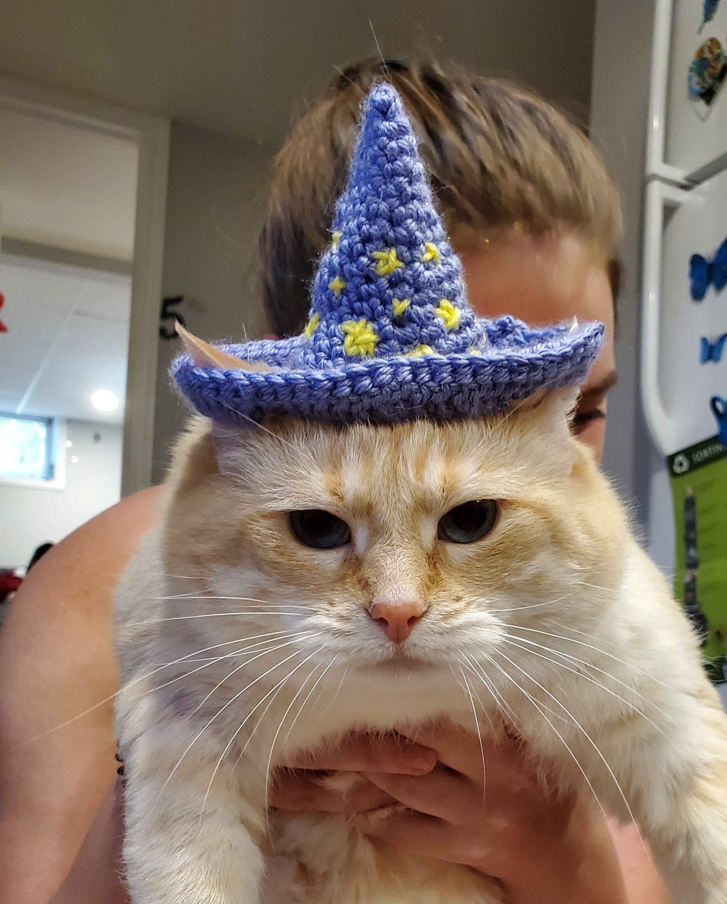
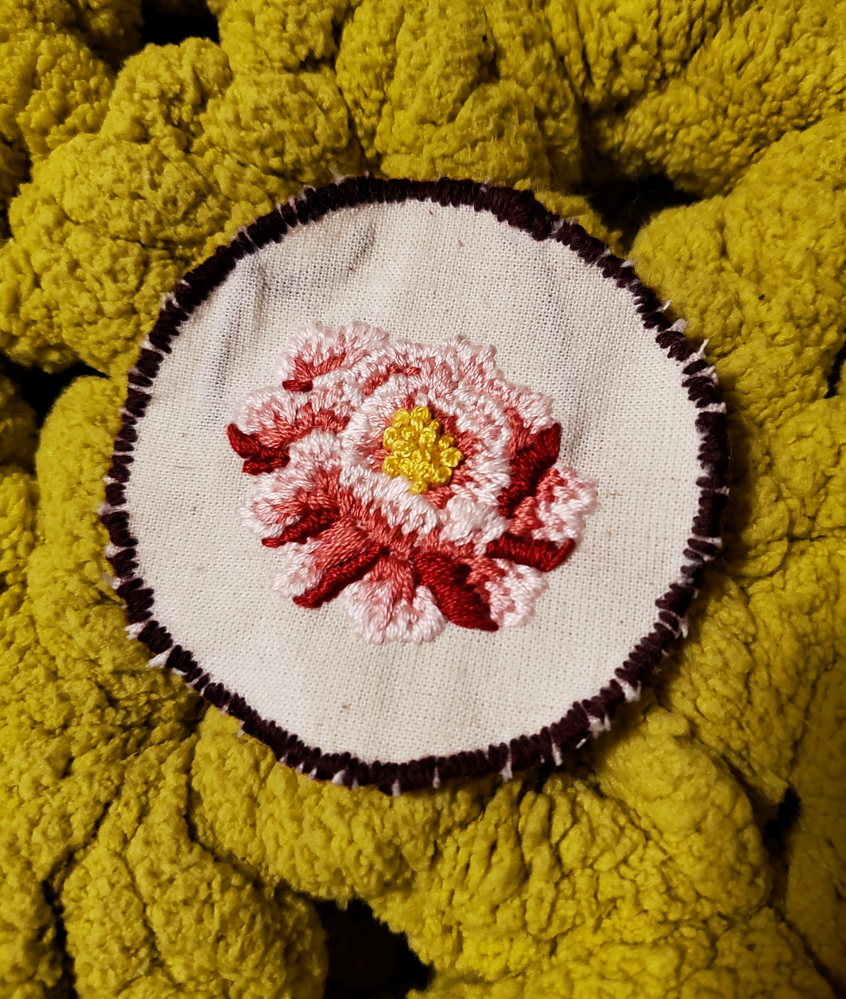
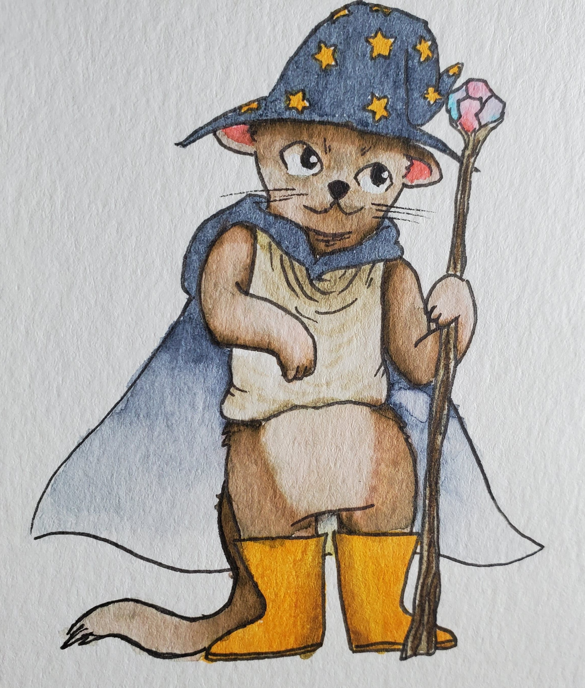
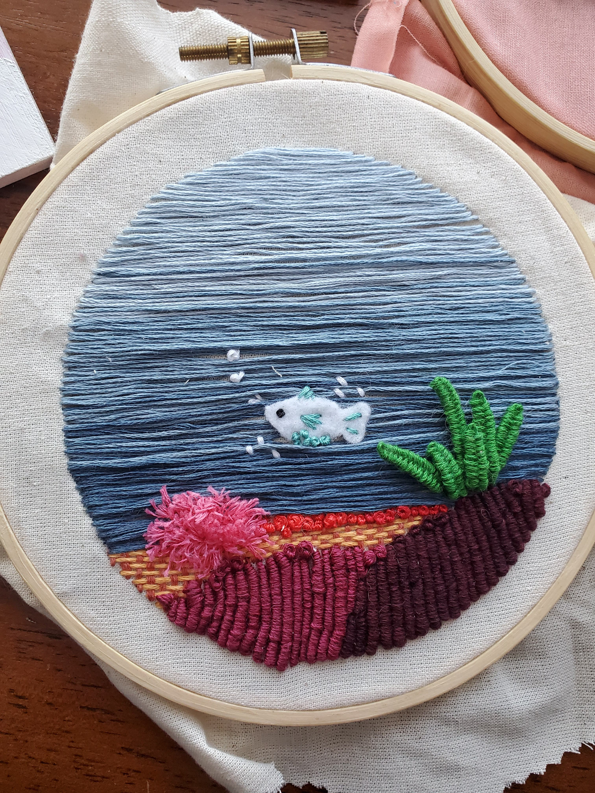
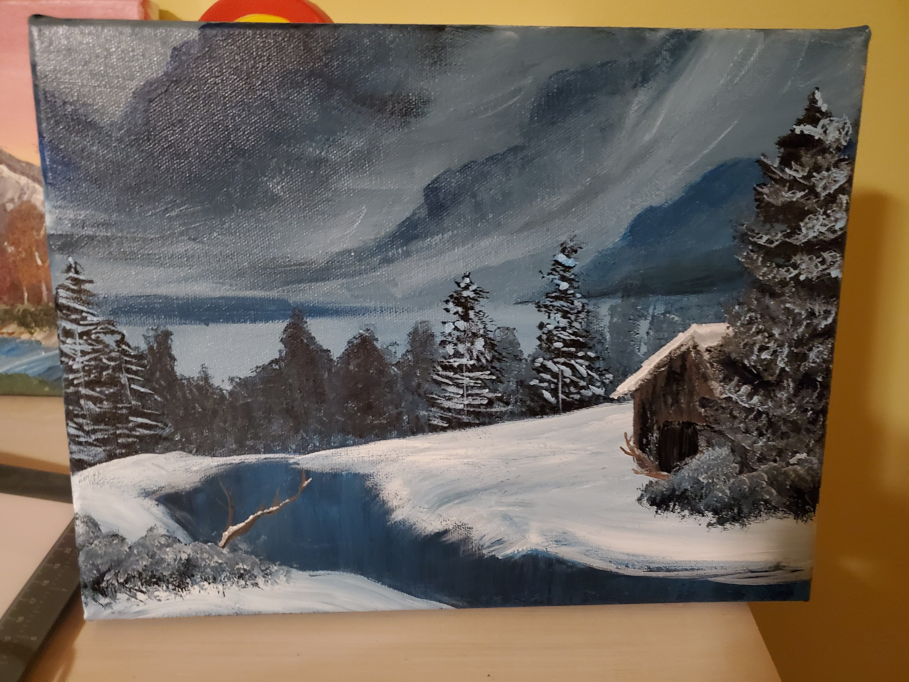

Hobbies
With social distancing and the pandemic, I've made a lot of art. I like to create with watercolour and acrylic paints and I've recently been planning a piece that combines those with embroidery. I like creating things that can be worn like embroidered patches, clothes, and hats for my friend's cat Squash.
If you guessed the mountain landscape, you were right! That's one of my art pieces. I like to play with all sorts of mediums, though. Here are more things I've created! Hover over the image for a short description of the work.

Squash wearing a crocheted wizard hat

An embroidered patch of a peony

A watercolour painting of an otter wizard

An embroidery of an underwater scene

An acryllic painting of a winter scene